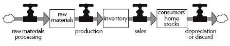
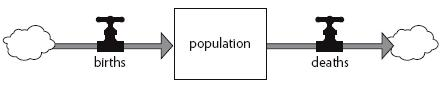
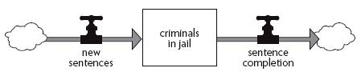
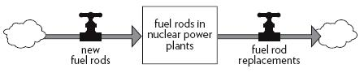
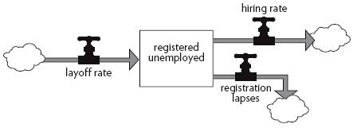

— FOUR —
ー四ー
Why Systems Surprise Us
为什么系统会让我们感到惊讶
_____________
是的，是的，是的
The trouble . . . is that we are terrifyingly ignorant. The most learned of us are ignorant. . . . The acquisition of knowledge always involves the revelation of ignorance—almost is the revelation of ignorance. Our knowledge of the world instructs us first of all that the world is greater than our knowledge of it.
—Wendell Berry,1
1 writer and Kentucky farmer
The simple systems in the zoo may have perplexed you with their behavior. They continue to surprise me, although I have been teaching them for years. That you and I are surprised says as much about us as it does about dynamic systems. The interactions between what I think I know about dynamic systems and my experience of the real world never fails to be humbling. They keep reminding me of three truths:
动物园里简单的系统可能会让你对它们的行为感到困惑。尽管我已经教它们很多年了，但它们仍然让我感到惊讶。你和我的惊讶不仅说明了动态系统，也说明了我们自己。我认为我对动态系统的了解和我对现实世界的体验之间的相互作用总是令人感到谦卑。它们不断提醒我三个真理:
1. Everything we think we know about the world is a model. Every word and every language is a model. All maps and statistics, books and databases, equations and computer programs are models. So are the ways I picture the world in my head—my mental models. None of these is or ever will be the real world.
2. Our models usually have a strong congruence with the world. That is why we are such a successful species in the biosphere. Especially complex and sophisticated are the mental models we develop from direct, intimate experience of nature, people, and organizations immediately around us.
3. However, and conversely, our models fall far short of representing the world fully. That is why we make mistakes and why we are regularly surprised. In our heads, we can keep track of only a few variables at one time. We often draw illogical conclusions from accurate assumptions, or logical conclusions from inaccurate assumptions. Most of us, for instance, are surprised by the amount of growth an exponential process can generate. Few of us can intuit how to damp oscillations in a complex system.
In short, this book is poised on a duality. We know a tremendous amount about how the world works, but not nearly enough. Our knowledge is amazing; our ignorance even more so. We can improve our understanding, but we can’t make it perfect. I believe both sides of this duality, because I have learned much from the study of systems.
Everything we think we know about the world is a model. Our models do have a strong congruence with the world. Our models fall far short of representing the real world fully.
This chapter describes some of the reasons why dynamic systems are so often surprising. Alternately, it is a compilation of some of the ways our mental models fail to take into account the complications of the real world—at least those ways that one can see from a systems perspective. It is a warning list. Here is where hidden snags lie. You can’t navigate well in an interconnected, feedback-dominated world unless you take your eyes off short-term events and look for long term behavior and structure; unless you are aware of false boundaries and bounded rationality; unless you take into account limiting factors, nonlinearities and delays. You are likely to mistreat, misdesign, or misread systems if you don’t respect their properties of resilience, self-organization, and hierarchy.
这一章描述了动态系统经常令人惊讶的一些原因。或者，它是我们的心理模型未能考虑到现实世界的复杂性的一些方式的汇编——至少是那些我们可以从系统的角度看到的方式。这是一个警告列表。这里是隐藏的障碍所在。在一个相互关联、反馈主导的世界里，除非你不再关注短期事件，而是寻找长期行为和结构; 除非你意识到错误的边界和有限理性; 除非你考虑到限制因素、非线性和延迟，否则你无法很好地驾驭这个世界。如果您不尊重系统的弹性、自我组织和层次结构的特性，那么您很可能会误解、错误设计或误读系统。
The bad news, or the good news, depending on your need to control the world and your willingness to be delighted by its surprises, is that even if you do understand all these system characteristics, you may be surprised less often, but you will still be surprised.
坏消息，或者好消息，取决于你控制世界的需要以及你是否愿意为它的惊喜而高兴，即使你理解了所有这些系统特性，你可能不会经常感到惊讶，但你仍然会感到惊讶。
Beguiling Events
诱人的事件
A system is a big black box
Of which we can’t unlock the locks,
And all we can find out about
Is what goes in and what comes out.
Related by parameters,
Permits us, sometimes, to relate
An input, output and a state.
If this relation’s good and stable
Then to predict we may be able,
But if this fails us—heaven forbid!
We’ll be compelled to force the lid!
—Kenneth Boulding,2 economist
ー kenneth Boulding，2位经济学家
Systems fool us by presenting themselves—or we fool ourselves by seeing the world—as a series of events. The daily news tells of elections, battles, political agreements, disasters, stock market booms or busts. Much of our ordinary conversation is about specific happenings at specific times and places. A team wins. A river floods. The Dow Jones Industrial Average hits 10,000. Oil is discovered. A forest is cut. Events are the outputs, moment by moment, from the black box of the system.
系统通过把它们自己呈现给我们来愚弄我们，或者我们通过把世界看作一系列事件来愚弄我们自己。每天的新闻都在讲述选举、战争、政治协议、灾难、股市的繁荣或萧条。我们大部分的日常对话都是关于特定时间和地点发生的特定事件。一个团队获胜。河水泛滥。道琼斯工业平均指数达到10000点。石油被发现。森林被砍伐。事件是系统黑匣子中的输出，每时每刻。
Events can be spectacular: crashes, assassinations, great victories, terrible tragedies. They hook our emotions. Although we’ve seen many thousands of them on our TV screens or the front page of the paper, each one is different enough from the last to keep us fascinated (just as we never lose our fascination with the chaotic twists and turns of the weather). It’s endlessly engrossing to take in the world as a series of events, and constantly surprising, because that way of seeing the world has almost no predictive or explanatory value. Like the tip of an iceberg rising above the water, events are the most visible aspect of a larger complex—but not always the most important.
事件可以是壮观的: 崩溃，暗杀，伟大的胜利，可怕的悲剧。它们勾住了我们的情感。尽管我们在电视屏幕上或报纸的头版上看到过成千上万张照片，但每一张都与上一张截然不同，足以让我们为之着迷(就像我们从未失去对混乱的天气的迷恋一样)。把世界当作一系列事件来看是无穷无尽的引人入胜，而且不断地令人惊讶，因为这种看待世界的方式几乎没有任何预测或解释价值。就像浮出水面的冰山一样，事件是一个更大的复杂事件中最显而易见的一面——但并不总是最重要的。
We are less likely to be surprised if we can see how events accumulate into dynamic patterns of behavior. The team is on a winning streak. The variance of the river is increasing, with higher floodwaters during rains and lower flows during droughts. The Dow has been trending up for two years. Discoveries of oil are becoming less frequent. The felling of forests is happening at an ever-increasing rate.
如果我们能看到事件如何积累成动态的行为模式，我们就不太可能感到惊讶。这个团队正在连胜。河流的变化越来越大，降雨时洪水越来越多，干旱时洪水越来越少。道琼斯工业平均指数两年来一直呈上升趋势。石油的发现越来越少。森林的砍伐正在以越来越快的速度发生。
The behavior of a system is its performance over time—its growth, stagnation, decline, oscillation, randomness, or evolution. If the news did a better job of putting events into historical context, we would have better behavior-level understanding, which is deeper than event-level under standing. When a systems thinker encounters a problem, the first thing he or she does is look for data, time graphs, the history of the system. That’s because long term behavior provides clues to the underlying system structure. And structure is the key to understanding not just what is happening, but why.
一个系统的行为是它随着时间的推移而表现出来的——它的增长、停滞、衰退、振荡、随机或进化。如果新闻能更好地将事件置于历史背景下，我们就能更好地理解行为层面，这比对事件层面的理解要深刻得多。当一个系统思考者遇到一个问题，他或她做的第一件事就是寻找数据，时间图表，系统的历史。这是因为长期的行为为潜在的系统结构提供了线索。结构不仅是理解发生了什么的关键，也是理解发生原因的关键。
The structure of a system is its interlocking stocks, flows, and feedback loops. The diagrams with boxes and arrows (my students call them “spaghetti-and-meatball diagrams”) are pictures of system structure. Structure determines what behaviors are latent in the system. A goal-seeking balancing feedback loop approaches or holds a dynamic equilibrium. A reinforcing feedback loop generates exponential growth. The two of them linked together are capable of growth, decay, or equilibrium. If they also contain delays, they may produce oscillations. If they work in periodic, rapid bursts, they may produce even more surprising behaviors.
一个系统的结构是它的连锁股票，流，和反馈回路。带有方框和箭头的图表(我的学生称之为“意大利面和肉丸图表”)是系统结构的图片。结构决定了系统中潜在的行为。一个寻求目标的平衡反馈回路接近或保持一个动态平衡。一个强化的反馈回路产生指数增长。这两者联系在一起，就能够实现增长、衰退或平衡。如果它们也包含延迟，它们可能会产生振荡。如果它们在周期性的快速爆发中工作，它们可能会产生更令人惊讶的行为。
System structure is the source of system behavior. System behavior reveals itself as a series of events over time.
Systems thinking goes back and forth constantly between structure (diagrams of stocks, flows, and feedback) and behavior (time graphs). Systems thinkers strive to understand the connections between the hand releasing the Slinky (event) and the resulting oscillations (behavior) and the mechanical characteristics of the Slinky’s helical coil (structure).
系统思维在结构(股票图、流量图和反馈图)和行为(时间图)之间不断来回。系统思考者努力理解释放出 Slinky 的手(事件)和由此产生的振荡(行为)之间的联系，以及 Slinky 螺旋线圈(结构)的机械特性。
Simple examples like a Slinky make this event-behavior-structure distinction seem obvious. In fact, much analysis in the world goes no deeper than events. Listen to every night’s explanation of why the stock market did what it did. Stocks went up (down) because the U.S. dollar fell (rose), or the prime interest rate rose (fell), or the Democrats won (lost), or one country invaded another (or didn’t). Event-event analysis.
像 Slinky 这样的简单示例使这种事件-行为-结构的区别显而易见。事实上，世界上很多分析并不比事件更深入。听听每天晚上股票市场为什么会这样的解释。股市上涨(下跌)是因为美元下跌(上涨) ，或者主要利率上升(下降) ，或者民主党赢了(输了) ，或者一个国家侵略了另一个国家(或者没有侵略)。事件-事件分析。
These explanations give you no ability to predict what will happen tomorrow. They give you no ability to change the behavior of the system—to make the stock market less volatile or a more reliable indicator of the health of corporations or a better vehicle to encourage investment, for instance.
这些解释让你无法预测明天会发生什么。它们不会让你有能力改变系统的行为——例如，降低股票市场的波动性，或者让股票市场成为反映企业健康状况的更可靠指标，或者成为鼓励投资的更好工具。
Most economic analysis goes one level deeper, to behavior over time. Econometric models strive to find the statistical links among past trends in income, savings, investment, government spending, interest rates, output, or whatever, often in complicated equations.
大多数经济学分析都深入到一个层次，即随着时间的推移而产生的行为。计量经济学模型努力寻找过去收入、储蓄、投资、政府支出、利率、产出等趋势之间的统计联系，通常是在复杂的方程式中。
These behavior-based models are more useful than event-based ones, but they still have fundamental problems. First, they typically overemphasize system flows and underemphasize stocks. Economists follow the behavior of flows, because that’s where the interesting variations and most rapid changes in systems show up. Economic news reports on the national production (flow) of goods and services, the GNP, rather than the total physical capital (stock) of the nation’s factories and farms and businesses that produce those goods and services. But without seeing how stocks affect their related flows through feedback processes, one cannot understand the dynamics of economic systems or the reasons for their behavior.
这些基于行为的模型比基于事件的模型更有用，但它们仍然存在基本问题。首先，它们通常过分强调系统流，而忽视股票。经济学家追踪流动的行为，因为那是系统中有趣的变化和最快速的变化出现的地方。经济新闻报道的是商品和服务的国民生产总值，而不是生产这些商品和服务的工厂、农场和企业的全部实物资本(存量)。但是，如果没有看到股票是如何通过反馈过程影响其相关流动的，人们就无法理解经济系统的动力学或其行为的原因。
Second, and more seriously, in trying to find statistical links that relate flows to each other, econometricians are searching for something that does not exist. There’s no reason to expect any flow to bear a stable relationship to any other flow. Flows go up and down, on and off, in all sorts of combinations, in response to stocks, not to other flows.
其次，也是更为严肃的是，在试图找到相互关联的资本流动的统计联系时，计量经济学家正在寻找一些并不存在的东西。没有理由期望任何流动与其他流动有稳定的关系。流量上下波动，断断续续，以各种组合方式，响应股票，而不是其他流量。
Let me use a simple example to explain what I mean. Suppose you knew nothing at all about thermostats, but you had a lot of data about past heat flows into and out of the room. You could find an equation telling you how those flows have varied together in the past, because under ordinary circumstances, being governed by the same stock (temperature of the room), they do vary together.
让我用一个简单的例子来解释我的意思。假设你对恒温器一无所知，但是你有很多关于过去热量进出房间的数据。你可以找到一个方程，告诉你这些流量在过去是如何一起变化的，因为在一般情况下，由相同的股票(房间的温度) ，他们一起变化。
Your equation would hold, however, only until something changes in the system’s structure—someone opens a window or improves the insulation, or tunes the furnace, or forgets to order oil. You could predict tomorrow’s room temperature with your equation, as long as the system didn’t change or break down. But if you were asked to make the room warmer, or if the room temperature suddenly started plummeting and you had to fix it, or if you wanted to produce the same room temperature with a lower fuel bill, your behavior-level analysis wouldn’t help you. You would have to dig into the system’s structure.
然而，只有在系统结构发生变化之前，你的方程才能成立——有人打开了窗户，改进了绝缘体，或者调整了炉子，或者忘记订购石油。你可以用你的方程预测明天的室温，只要系统没有改变或者故障。但是，如果你被要求让房间变暖，或者如果室温突然开始下降，你不得不修复它，或者如果你想生产相同的室温与较低的燃料账单，你的行为水平分析不会帮助你。你必须深入研究这个系统的结构。
That’s why behavior-based econometric models are pretty good at predicting the near-term performance of the economy, quite bad at predicting the longer-term performance, and terrible at telling one how to improve the performance of the economy.
这就是为什么基于行为的经济计量模型在预测经济的近期表现方面做得很好，在预测长期表现方面做得很差，在告诉人们如何改善经济表现方面做得很糟糕。
And that’s one reason why systems of all kinds surprise us. We are too fascinated by the events they generate. We pay too little attention to their history. And we are insufficiently skilled at seeing in their history clues to the structures from which behavior and events flow.
这就是为什么各种系统都让我们惊讶的原因之一。我们对它们产生的事件过于着迷。我们太少关注他们的历史。而且我们也没有足够的技巧在他们的历史中看到行为和事件发生的结构的线索。
Linear Minds in a Nonlinear World
非线性世界中的线性思维
Linear relationships are easy to think about: the more the merrier. Linear equations are solvable, which makes them suitable for textbooks. Linear systems have an important modular virtue: you can take them apart and put them together again—the pieces add up.
Nonlinear systems generally cannot be solved and cannot be added together. . . . Nonlinearity means that the act of playing the game has a way of changing the rules. . . . That twisted changeability makes nonlinearity hard to calculate, but it also creates rich kinds of behavior that never occur in linear systems.
—James Gleick, author of Chaos: Making a New Science 3
3
We often are not very skilled in understanding the nature of relationships. A linear relationship between two elements in a system can be drawn on a graph with a straight line. It’s a relationship with constant proportions. If I put 10 pounds of fertilizer on my field, my yield will go up by 2 bushels. If I put on 20 pounds, my yield will go up by 4 bushels. If I put on 30 pounds, I’ll get an increase of 6 bushels.
在理解人际关系的本质方面，我们往往不是很熟练。一个系统中两个元素之间的线性关系可以用一条直线绘制在一张图上。这是一种比例不变的关系。如果我在田里施10磅肥料，我的产量就会增加2蒲式耳。如果我增加20磅，我的产量将增加4蒲式耳。如果我增加30磅，我将得到6蒲式耳的增长。
A nonlinear relationship is one in which the cause does not produce a proportional effect. The relationship between cause and effect can only be drawn with curves or wiggles, not with a straight line. If I put 100 pounds of fertilizer on, my yield will go up by 10 bushels; if I put on 200, my yield will not go up at all; if I put on 300, my yield will go down. Why? I’ve damaged my soil with “too much of a good thing.”
非线性关系是指原因不产生比例效应的关系。因果关系只能用曲线或摆动来描述，而不能用直线来描述。如果我施100磅肥料，我的产量会增加10蒲式耳; 如果我施200磅肥料，我的产量根本不会增加; 如果我施300磅肥料，我的产量会下降。为什么？我用“好东西太多了”来破坏我的土壤
The world is full of nonlinearities.
这个世界充满了非线性。
So the world often surprises our linear-thinking minds. If we’ve learned that a small push produces a small response, we think that twice as big a push will produce twice as big a response. But in a nonlinear system, twice the push could produce one-sixth the response, or the response squared, or no response at all.
因此，这个世界经常让我们这些线性思维的头脑感到惊讶。如果我们知道一个小的推动会产生一个小的反应，我们会认为两倍大的推动会产生两倍大的反应。但在非线性系统中，两次推力可以产生六分之一的响应，或者响应的平方，或者根本没有响应。
Here are some examples of nonlinearities:
下面是一些非线性的例子:
• As the flow of traffic on a highway increases, car speed is affected only slightly over a large range of car density. Eventually, however, small further increases in density produce a rapid drop-off in speed. And when the number of cars on the highway builds up to a certain point, it can result in a traffic jam, and car speed drops to zero.
• Soil erosion can proceed for a long time without much affect on crop yield—until the topsoil is worn down to the depth of the root zone of the crop. Beyond that point, a little further erosion can cause yields to plummet.
• A little tasteful advertising can awaken interest in a product. A lot of blatant advertising can cause disgust for the product.
You can see why nonlinearities produce surprises. They foil the reasonable expectation that if a little of some cure did a little good, then a lot of it will do a lot of good—or alternately that if a little destructive action caused only a tolerable amount of harm, then more of that same kind of destruction will cause only a bit more harm. Reasonable expectations like these in a nonlinear world produce classic mistakes.
你可以看到为什么非线性会产生惊喜。他们挫败了这样一种合理的期望，即如果一点点的治愈方法有一点好处，那么很多方法也会有很多好处——或者，如果一点点的破坏性行为只造成一定程度的伤害，那么更多的同类破坏只会造成更多一点的伤害。在一个非线性的世界里，这样的合理预期会产生典型的错误。
Nonlinearities are important not only because they confound our expectations about the relationship between action and response. They are even more important because they change the relative strengths of feedback loops. They can flip a system from one mode of behavior to another.
非线性非常重要，不仅因为它们混淆了我们对于行为和反应之间关系的预期。它们甚至更重要，因为它们改变了反馈回路的相对强度。它们可以将一个系统从一种行为模式转变为另一种行为模式。
Nonlinearities are the chief cause of the shifting dominance that characterizes several of the systems in the zoo—the sudden swing between exponential growth caused by a dominant reinforcing loop, say, and then decline caused by a suddenly dominant balancing loop.
非线性是动物园中几个系统转移优势的主要原因，这种转移优势的特征是: 指数增长之间的突然摆动，这种摆动是由占优势的强化回路引起的，然后是由突然占优势的平衡回路引起的下降。
To take a dramatic example of the effects of nonlinearities, consider the destructive irruptions of the spruce budworm in North American forests.
为了举一个非线性效应的引人注目的例子，考虑一下北美森林中云杉幼虫的破坏性入侵。
INTERLUDE
• Spruce Budworms, Firs, and Pesticides
插曲
•云杉芽虫、冷杉和杀虫剂
Tree ring records show that the spruce budworm has been killing spruce and fir trees periodically in North America for at least 400 years. Until this century, no one much cared. The valuable tree for the lumber industry was the white pine. Spruce and fir were considered “weed species.” Eventually, however, the stands of virgin pine were gone, and the lumber industry turned to spruce and fir. Suddenly the budworm was seen as a serious pest.
树木年轮记录显示，至少400年来，云杉芽虫一直在北美定期杀死云杉和冷杉树。直到本世纪，才有人关心这个问题。对于木材工业来说，最有价值的树木是白松。云杉和冷杉被认为是“杂草物种”然而，最终，原始松树的林地消失了，木材工业转向了云杉和冷杉。突然之间，这种小虫子被视为一种严重的害虫。
So, beginning in the 1950s, northern forests were sprayed with DDT to control the spruce budworm. In spite of the spraying, every year there was a budworm resurgence. Annual sprays were continued through the 1950s, 1960s, and 1970s, until DDT was banned. Then the sprays were changed to fenitrothion, acephate, Sevin, and methoxychlor.
因此，从20世纪50年代开始，北方的森林被喷洒 DDT 来控制云杉幼虫。尽管喷洒了农药，但是每年都有一种新的幼虫死灰复燃。在1950年代、1960年代和1970年代，每年都有喷洒，直到滴滴涕被禁止。后来，这种喷雾剂被改为杀螟硫磷、乙酰甲胺磷、七氟乙烷和甲氧氯。
Insecticides were no longer thought to be the ultimate answer to the budworm problem, but they were still seen as essential. “Insecticides buy time,” said one forester, “That’s all the forest manager wants; to preserve the trees until the mill is ready for them.”
杀虫剂不再被认为是解决幼虫问题的最终答案，但它们仍被视为必需品。“杀虫剂可以拖延时间,”一位林务员说，“这就是森林管理者想要的: 保护树木，直到磨坊为它们做好准备。”
By 1980, spraying costs were getting unmanageable—the Canadian province of New Brunswick spent $12.5 million on budworm “control” that year. Concerned citizens were objecting to the drenching of the landscape with poisons. And, in spite of the sprays, the budworm was still killing as many as 20 million hectares (50 million acres) of trees per year.
到了1980年，喷洒成本变得难以控制ーー加拿大新不伦瑞克省在那一年花费了1250万美元用于“控制”幼虫。忧心忡忡的市民们反对用毒药浸泡这片土地。而且，尽管有喷雾，这种小虫仍然每年杀死2000万公顷(5000万英亩)的树木。
C. S. Holling of the University of British Columbia and Gordon Baskerville of the University of New Brunswick put together a computer model to get a whole-system look at the budworm problem. They discovered that before the spraying began, the budworm had been barely detectable in most years. It was controlled by a number of predators, including birds, a spider, a parasitic wasp, and several diseases. Every few decades, however, there was a budworm outbreak, lasting from six to ten years. Then the budworm population would subside, eventually to explode again
不列颠哥伦比亚大学的 c · s · 霍林和新不伦瑞克大学的戈登 · 巴斯克维尔建立了一个计算机模型，用于研究蚯蚓问题的整个系统。他们发现，在喷洒开始之前，在大多数年份里，几乎没有发现过这种虫子。它受到许多捕食者的控制，包括鸟类、蜘蛛、寄生蜂和一些疾病。然而，每隔几十年，就会爆发一次幼虫大爆发，持续六到十年不等。然后，这种虫子的数量逐渐减少，最终再次爆发
The budworm preferentially attacks balsam fir, secondarily spruce. Balsam fir is the most competitive tree in the northern forest. Left to its own devices, it would crowd out spruce and birch, and the forest would become a monoculture of nothing but fir. Each budworm outbreak cuts back the fir population, opening the forest for spruce and birch. Eventually fir moves back in.
幼虫优先攻击香脂冷杉，其次是云杉。香脂冷杉是北方森林中最具竞争力的树种。如果任其自生自灭，它将挤走云杉和桦树，森林将变成只有冷杉的单一种植。每一次幼虫的爆发都会减少冷杉的数量，为云杉和桦树打开森林的大门。最终，冷杉又回来了。
As the fir population builds up, the probability of an outbreak increases—nonlinearly. The reproductive potential of the budworm increases more than proportionately to the availability of its favorite food supply. The final trigger is two or three warm, dry springs, perfect for the survival of budworm larvae. (If you’re doing event-level analysis, you will blame the outburst on the warm, dry springs.)
随着杉木种群数量的增加，爆发的可能性非线性地增加。幼虫的繁殖潜力与其最喜欢的食物供应量成比例地增加。最后一个触发因素是两到三个温暖干燥的泉水，对于幼虫的生存来说是完美的。(如果你在做事件层面的分析，你会把爆发归咎于温暖的干泉
The budworm population grows too great for its natural enemies to hold in check—nonlinearly. Over a wide range of conditions, greater budworm populations result in more rapid multiplication of budworm predators. But beyond some point, the predators can multiply no faster. What was a reinforcing relationship—more budworms, faster predator multiplication—becomes a nonrelationship—more budworms, no faster predator multiplication—and the budworms take off, unimpeded.
蚯蚓的数量增长太快，以至于它的天敌无法控制——非线性的。在各种各样的条件下，大量的幼虫数量会导致幼虫捕食者的快速繁殖。但是超过某一点，捕食者的繁殖速度就不会更快了。一种强化关系——更多的幼虫，更快的捕食者增殖——变成了一种非关系——更多的幼虫，没有更快的捕食者增殖——幼虫不受阻碍地起飞。
Now only one thing can stop the outbreak: the insect reducing its own food supply by killing off fir trees. When that finally happens, the budworm population crashes—nonlinearly. The reinforcing loop of budworm reproduction yields dominance to the balancing loop of budworm starvation. Spruce and birch move into the spaces where the firs used to be, and the cycle begins again.
现在只有一件事可以阻止这种疾病的爆发: 这种昆虫通过杀死冷杉树来减少自己的食物供应。当这种情况最终发生时，幼虫的数量就会非线性地减少。幼虫繁殖的强化循环让位于幼虫饥饿的平衡循环。云杉和桦树迁移到冷杉曾经生长的地方，循环再次开始。
The budworm/spruce/fir system oscillates over decades, but it is ecologically stable within bounds. It can go on forever. The main effect of the budworm is to allow tree species other than fir to persist. But in this case what is ecologically stable is economically unstable. In eastern Canada, the economy is almost completely dependent on the logging industry, which is dependent on a steady supply of fir and spruce.
杨虫/云杉/冷杉系统振荡了几十年，但它在一定范围内是生态稳定的。它可以永远持续下去。芽虫的主要作用是让杉木以外的树种得以延续。但在这种情况下，生态稳定的东西在经济上是不稳定的。在加拿大东部，经济几乎完全依赖于伐木业，而伐木业依赖于稳定的冷杉和云杉供应。
Many relationships in systems are nonlinear. Their relative strengths shift in disproportionate amounts as the stocks in the system shift. Nonlinearities in feedback systems produce shifting dominance of loops and many complexities in system behavior.
When industry sprays insecticides, it shifts the whole system to balance uneasily on different points within its nonlinear relationships. It kills off not only the pest, but the natural enemies of the pest, thereby weakening the feedback loop that normally keeps the budworms in check. It keeps the density of fir high, moving the budworms up their nonlinear reproduction curve to the point at which they’re perpetually on the edge of population explosion.
当工业喷洒杀虫剂时，整个系统就会在其非线性关系中的不同点上不安地平衡。它不仅杀死了害虫，而且杀死了害虫的天敌，从而削弱了反馈回路，而正常情况下，反馈回路可以控制住幼虫。它保持了冷杉的高密度，使得幼虫沿着非线性的繁殖曲线向上移动，直到它们永远处于种群爆炸的边缘。
The forest management practices have set up what Holling calls “persistent semi-outbreak conditions” over larger and larger areas. The managers have found themselves locked into a policy in which there is an incipient volcano bubbling, such that, if the policy fails, there will be an outbreak of an intensity that has never been seen before.”4
森林管理实践在越来越大的地区建立了霍林所说的“持续的半暴发条件”。基金经理们发现自己陷入了一种政策，在这种政策中，一座初期的火山正在冒泡，因此，如果政策失败，将爆发一场前所未有的强度爆发。”4
Nonexistent Boundaries
不存在的界限
When we think in terms of systems, we see that a fundamental misconception is embedded in the popular term “side-effects.”. . . This phrase means roughly “effects which I hadn’t foreseen or don’t want to think about.”. . . Side-effects no more deserve the adjective “side” than does the “principal” effect. It is hard to think in terms of systems, and we eagerly warp our language to protect ourselves from the necessity of doing so.
—Garrett Hardin,5 ecologist
Garrett Hardin，5生态学家
Remember the clouds in the structural diagrams of Chapters One and Two? Beware of clouds! They are prime sources of system surprises.
还记得第一章和第二章结构图中的云吗？小心云！它们是系统惊喜的主要来源。
Clouds stand for the beginnings and ends of flows. They are stocks—sources and sinks—that are being ignored at the moment for the purposes of simplifying the present discussion. They mark the boundary of the system diagram. They rarely mark a real boundary, because systems rarely have real boundaries. Everything, as they say, is connected to everything else, and not neatly. There is no clearly determinable boundary between the sea and the land, between sociology and anthropology, between an automobile’s exhaust and your nose. There are only boundaries of word, thought, perception, and social agreement—artificial, mental-model boundaries.
云代表着流的开始和结束。它们是股票——来源和汇——为了简化目前的讨论而被忽略了。它们标志着系统图的边界。它们很少标记真正的边界，因为系统很少有真正的边界。正如他们所说，一切事物都与其他事物联系在一起，而不是整齐地联系在一起。在海洋和陆地之间，在社会学和人类学之间，在汽车尾气和你的鼻子之间，没有明确的界限。只有文字、思想、感知和社会一致性的界限——人工的、心理模型的界限。
The greatest complexities arise exactly at boundaries. There are Czechs on the German side of the border and Germans on the Czech side of the border. Forest species extend beyond the edge of the forest into the field; field species penetrate partway into the forest. Disorderly, mixed-up borders are sources of diversity and creativity.
最大的复杂性恰恰出现在边界上。德国一边是捷克人，捷克一边是德国人。森林物种从森林边缘延伸到田野，田野物种穿过森林的一部分。混乱无序的边界是多样性和创造力的源泉。
In our system zoo, for instance, I showed the flow of cars into a car dealer’s inventory as coming from a cloud. Of course, cars don’t come from a cloud, they come from the transformation of a stock of raw materials, with the help of capital, labor, energy, technology, and management (the means of production). Similarly, the flow of cars out of the inventory goes not to a cloud, but through sales to the households or businesses of consumers.
例如，在我们的系统动物园中，我将进入汽车经销商库存的汽车显示为来自云。当然，汽车不是从云端来的，它们来自于原材料库存的转换，在资本、劳动力、能源、技术和管理(生产资料)的帮助下。同样地，汽车从库存中流出并不是通过云计算，而是通过销售给消费者的家庭或企业。
Whether it is important to keep track of raw materials or consumers’ home stocks (whether it is legitimate to replace them in a diagram with clouds) depends on whether these stocks are likely to have a significant influence on the behavior of the system over the time period of interest. If raw materials are guaranteed to be abundant and consumers continue to demand the products, then clouds will do. But if there could be a materials shortage or a product glut, and if we drew a mental boundary around the system that did not include these stocks, then we could be surprised by future events.
跟踪原材料或消费者的家庭库存是否重要(用云代替它们是否合法) ，取决于这些库存在一段时间内是否可能对系统行为产生重大影响。如果原材料保证充足，消费者继续需求这些产品，那么云就可以了。但是，如果可能出现材料短缺或产品过剩，如果我们在系统周围划定一个不包括这些库存的心理边界，那么我们可能会对未来的事件感到惊讶。

Figure 47. Revealing some of the stocks behind the clouds.
图47揭示了云层背后的一些股票。
There are still clouds in Figure 47. The boundary can be expanded further. Processed raw materials come from chemical plants, smelters, or refineries, whose input comes, ultimately, from the earth. Processing creates not only products, but also employment, wages, profits, and pollution. Discarded consumers’ stocks go to landfills or incinerators or recycling centers, from which they go on to have further effects on society and the environment. Landfills leach into drinking-water wells, incinerators produce smoke and ash, recycling centers move materials back into the production stream.
图47中仍然有云。边界可以进一步扩展。加工的原材料来自化工厂、冶炼厂或精炼厂，它们的输入最终来自地球。加工不仅创造了产品，还创造了就业、工资、利润和污染。被丢弃的消费者的存货被运往垃圾填埋场、焚化炉或回收中心，从而对社会和环境产生进一步的影响。垃圾填埋场渗入饮用水井，焚化炉产生烟雾和灰烬，回收中心将材料运回生产流。
Whether it’s important to think about the full flow from mine to dump, or as industry calls it, “from cradle to grave,” depends on who wants to know, for what purpose, over how long. In the long term, the full flow is important and, as the physical economy grows and society’s “ecological footprint” expands, the long term is increasingly coming to be the short term. Landfills fill up with a suddenness that has been surprising for people whose mental models picture garbage as going “away,” into some sort of a cloud. Sources of raw materials—mines, wells, and oil fields—can be exhausted with surprising suddenness too.
是否考虑从矿山到垃圾场的全部流动是重要的，或者像工业界所说的“从摇篮到坟墓”，取决于谁想知道，为了什么目的，在多长时间内。从长远来看，充分的流动是重要的，随着物质经济的增长和社会的”生态足迹”的扩大，长期越来越成为短期。垃圾填埋场充满了突然性，这对于那些心理模型将垃圾描绘成“消失”的人来说是令人惊讶的。原材料的来源——矿井、油田——也可能因为惊人的突然性而耗尽。
With a long enough time horizon, even mines and dumps are not the end of the story. The great geological cycles of the earth keep moving materials around, opening and closing seas, raising up and wearing down mountains. Eons from now, everything put in a dump will end up on the top of a mountain or deep under the sea. New deposits of metals and fuels will form. On planet Earth there are no system “clouds,” no ultimate boundaries. Even real clouds in the sky are part of a hydrological cycle. Everything physical comes from somewhere, everything goes somewhere, everything keeps moving.
在足够长的时间范围内，即使是矿山和垃圾场也不是故事的结局。地球巨大的地质循环不断地移动物质，打开和关闭海洋，上升和磨损山脉。从现在开始，所有被丢进垃圾堆的东西最终都会被丢到山顶或者深埋在海底。新的金属和燃料沉积物将会形成。在地球上，没有系统的“云”，没有终极的边界。甚至天空中真正的云也是水文循环的一部分。一切物质都来自某个地方，一切都去了某个地方，一切都在继续运动。
Which is not to say that every model, mental or computer, has to follow each connection until it includes the whole planet. Clouds are a necessary part of models that describe metaphysical flows. Anger literally “comes out of a cloud,” as does love, hatred, self esteem, and so on. If we’re to understand anything, we have to simplify, which means we have to make boundaries. Often that’s a safe thing to do. It’s usually not a problem, for example, to think of populations with births and deaths coming from and going to clouds, as in Figure 48.
这并不是说，每一个模型，精神或计算机，必须跟随每一个联系，直到它包括整个星球。云是描述形而上学流的模型中必不可少的一部分。愤怒从字面上“从云中出来”，就像爱、恨、自尊等等。如果我们想要理解任何事情，我们必须简化，这意味着我们必须划清界限。通常这样做是安全的。例如，想象一下出生和死亡的人口来自云层并且从云层中移动通常不是问题，如图48所示。

Figure 48. More clouds.
图48更多的云。
Figure 48 shows actual “cradle to grave” boundaries. Even these boundaries would be unserviceable, however, if the population in question experienced significant in- or out-migration, or if the problem under discussion was limited cemetery space.
图48显示了实际的“从摇篮到坟墓”的边界。然而，如果有关人口经历了大量的进出移徙，或者如果讨论的问题是墓地面积有限，那么即使这些边界也是无法使用的。
The lesson of boundaries is hard even for systems thinkers to get. There is no single, legitimate boundary to draw around a system. We have to invent boundaries for clarity and sanity; and boundaries can produce problems when we forget that we’ve artificially created them.
即使对于系统思想家来说，界限的教训也很难理解。在一个系统周围没有单一的、合法的界限。我们必须为清晰和明智创造界限; 而当我们忘记自己是人为创造的界限时，界限就会产生问题。
There are no separate systems. The world is a continuum. Where to draw a boundary around a system depends on the purpose of the discussion—the questions we want to ask.
When you draw boundaries too narrowly, the system surprises you. For example, if you try to deal with urban traffic problems without thinking about settlement patterns, you build highways, which attract housing developments along their whole length. Those households, in turn, put more cars on the highways, which then become just as clogged as before.
当你划定的界限过于狭窄时，这个系统会让你大吃一惊。例如，如果你试图处理城市交通问题而不考虑居住模式，你就建造了高速公路，它吸引了整个长度的住宅开发项目。这些家庭，反过来，把更多的汽车放在高速公路上，然后变得像以前一样拥堵。
If you try to solve a sewage problem by throwing the waste into a river, the towns downstream make it clear that the boundary for thinking about sewage has to include the whole river. It might also have to include the soil groundwater surrounding the river. It probably doesn’t have to include the next watershed or the planetary hydrological cycle.
如果你试图通过把废物扔进河里来解决污水问题，那么下游的城镇就会清楚地表明，考虑污水问题的边界必须包括整条河。它可能还必须包括河流周围的土壤地下水。它可能不需要包括下一个分水岭或者行星水文循环。
Planning for a national park used to stop at the physical boundary of the park. But park boundaries around the world are regularly crossed by nomadic peoples, by migrating wildlife, by waters that flow into, out of, or under the park, by the effects of economic development at the park’s edges, by acid rain, and now by a climate changing from greenhouse gases in the atmosphere. Even without climate change, to manage a park you have to think about a boundary wider than the official perimeter.
国家公园的规划过去常常停留在公园的物理边界上。但世界各地的公园边界经常被游牧民族、迁徙的野生动物、流入、流出或流入公园的水、公园边缘经济发展的影响、酸雨，以及现在大气中温室气体导致的气候变化所跨越。即使没有气候变化，要管理一个公园，你必须考虑一个比官方边界更宽的边界。
Systems analysts often fall into the opposite trap: making boundaries too large. They have a habit of producing diagrams that cover several pages with small print and many arrows connecting everything with everything. There is the system! they say. If you have considered anything less, you are academically illegitimate.
系统分析师经常陷入相反的陷阱: 界限过大。他们有一个习惯，就是用小字体和许多箭头把所有的东西和所有的东西连接起来，绘制几页的图表。这就是系统！他们说。如果你没有考虑到这一点，那么你在学术上是不合法的。
This “my model is bigger than your model” game results in enormously complicated analyses, which produce piles of information that may only serve to obscure the answers to the questions at hand. For example, modeling the earth’s climate in full detail is interesting for many reasons, but may not be necessary for figuring out how to reduce a country’s CO2 emissions to reduce climate change.
这种“我的模型比你的模型大”的游戏导致了极其复杂的分析，产生了大量的信息，这些信息可能只会模糊手头问题的答案。例如，由于许多原因，对地球气候进行全面详细的模拟是很有趣的，但对于弄清楚如何减少一个国家的二氧化碳排放量以减少气候变化可能并不是必要的。
The right boundary for thinking about a problem rarely coincides with the boundary of an academic discipline, or with a political boundary. Rivers make handy borders between countries, but the worst possible borders for managing the quantity and quality of the water. Air is worse than water in its insistence on crossing political borders. National boundaries mean nothing when it comes to ozone depletion in the stratosphere, or greenhouse gases in the atmosphere, or ocean dumping.
思考问题的正确界限很少与学科的界限或政治的界限相一致。河流是国与国之间便利的边界，但却是管理水资源数量和质量最糟糕的边界。空气比水更糟糕，因为它坚持要跨越政治边界。当涉及到平流层的臭氧消耗、大气中的温室气体或海洋倾倒时，国家边界毫无意义。
Ideally, we would have the mental flexibility to find the appropriate boundary for thinking about each new problem. We are rarely that flexible. We get attached to the boundaries our minds happen to be accustomed to. Think how many arguments have to do with boundaries—national boundaries, trade boundaries, ethnic boundaries, boundaries between public and private responsibility, and boundaries between the rich and the poor, polluters and pollutees, people alive now and people who will come in the future. Universities can maintain disputes for years about the boundaries between economics and government, art and art history, literature and literary criticism. Too often, universities are living monuments to boundary rigidity.
理想情况下，我们应该有足够的思维灵活性来找到合适的边界来思考每一个新的问题。我们很少这么灵活。我们依附于我们的大脑恰好习惯的边界。想想有多少争论与边界有关——国家边界、贸易边界、种族边界、公共和私人责任的边界、富人和穷人的边界、污染者和污染者的边界、现在还活着的人和将来会来的人的边界。大学可以在经济学和政府、艺术和艺术史、文学和文学批评之间的界限问题上争论多年。很多时候，大学是僵化边界的活生生的纪念碑。



Figure 49. Examples of more clouds. These are systems in which a boundary or cloud should not stop you from thinking beyond the borders of the system, but start you thinking beyond those borders. What is driving the supply of people being given new sentences? Where do the fuel rods go after replacement? What happens to an unemployed person whose registration for unemployment lapses?
图49。更多云的例子。在这些系统中，边界或者云不应该阻止你超越系统的边界思考，而是让你开始超越这些边界思考。是什么驱使人们被判处新的刑罚？更换燃料棒之后，燃料棒去了哪里？失业登记失效的人怎么办？
It’s a great art to remember that boundaries are of our own making, and that they can and should be reconsidered for each new discussion, problem, or purpose. It’s a challenge to stay creative enough to drop the boundaries that worked for the last problem and to find the most appropriate set of boundaries for the next question. It’s also a necessity, if problems are to be solved well.
这是一门伟大的艺术，记住界限是我们自己创造的，它们可以而且应该为每一个新的讨论、问题或目的重新考虑。保持足够的创造力，放弃上一个问题的界限，并为下一个问题找到最合适的界限，这是一个挑战。如果问题要得到很好的解决，这也是必要的。
Layers of Limits
极限的层次
Systems surprise us because our minds like to think about single causes neatly producing single effects. We like to think about one or at most a few things at a time. And we don’t like, especially when our own plans and desires are involved, to think about limits.
系统之所以让我们感到惊讶，是因为我们的大脑喜欢思考单一的原因，而这些原因巧妙地产生了单一的效果。我们喜欢一次只考虑一件事，或者最多考虑几件事。我们不喜欢，尤其是当我们自己的计划和欲望涉及到的时候，去考虑限制。
But we live in a world in which many causes routinely come together to produce many effects. Multiple inputs produce multiple outputs, and virtually all of the inputs, and therefore outputs, are limited. For example, an industrial manufacturing process needs:
但是，我们生活在这样一个世界，在这个世界上，许多原因经常聚集在一起，产生许多影响。多种输入产生多种输出，几乎所有的输入，因此输出，都是有限的。例如，一个工业生产过程需要:
• capital
• labor
• energy
• raw materials
• land
• water
• technology
• credit
• insurance
• customers
• good management
• public-funded infrastructure and government services (such as police and fire protection and education for managers and workers)
• functioning families to bring up and care for both producers and consumers
• a healthy ecosystem to supply or support all these inputs and to absorb or carry away their wastes
A patch of growing grain needs:
一小块正在生长的谷物需要:
• sunlight
• air
• water
• nitrogen
• phosphorus
• potassium
• dozens of minor nutrients
• a friable soil and the services of a microbial soil community
• some system to control weeds and pests
• protection from the wastes of the industrial manufacturer
It was with regard to grain that Justus von Liebig came up with his famous “law of the minimum.” It doesn’t matter how much nitrogen is available to the grain, he said, if what’s short is phosphorus. It does no good to pour on more phosphorus, if the problem is low potassium.
尤斯图斯 · 冯 · 李比希提出了著名的“最低限度法则”他说，如果缺少的是磷，谷物中有多少氮并不重要。如果问题是低钾，那么多施磷是没有好处的。
Bread will not rise without yeast, no matter how much flour it has. Children will not thrive without protein, no matter how many carbohydrates they eat. Companies can’t keep going without energy, no matter how many customers they have—or without customers, no matter how much energy they have.
面包没有酵母就不会发酵，不管它有多少面粉。没有蛋白质，无论孩子们吃了多少碳水化合物，他们都不会茁壮成长。企业没有能量就无法生存，不管他们有多少顾客，也不管他们没有顾客，不管他们有多少能量。
This concept of a limiting factor is simple and widely misunderstood. Agronomists assume, for example, that they know what to put in artificial fertilizer, because they have identified many of the major and minor nutrients in good soil. Are there any essential nutrients they have not identified? How do artificial fertilizers affect soil microbe communities? Do they interfere with, and therefore limit, any other functions of good soil? And what limits the production of artificial fertilizers?
这个限制因素的概念很简单，而且被广泛误解。例如，农学家假设他们知道在人工肥料中加入什么，因为他们已经确定了良好土壤中的许多主要和次要养分。有没有什么必需的营养物质他们还没有确定？人工肥料如何影响土壤微生物群落？它们是否干扰并因此限制了肥沃土壤的其他功能？是什么限制了人工肥料的生产？
At any given time, the input that is most important to a system is the one that is most limiting.
Rich countries transfer capital or technology to poor ones and wonder why the economies of the receiving countries still don’t develop, never thinking that capital or technology may not be the most limiting factors.
富国将资本或技术转移给穷国，不明白为什么接受国的经济仍然没有发展，从来不认为资本或技术可能不是最大的限制因素。
Economics evolved in a time when labor and capital were the most common limiting factors to production. Therefore, most economic production functions keep track only of these two factors (and sometimes technology). As the economy grows relative to the ecosystem, however, and the limiting factors shift to clean water, clean air, dump space, and acceptable forms of energy and raw materials, the traditional focus on only capital and labor becomes increasingly unhelpful.
在劳动力和资本是限制生产的最常见因素的时代，经济学得以发展。因此，大多数经济生产函数只跟踪这两个因素(有时是技术)。然而，随着经济相对于生态系统的增长，以及限制因素转向清洁水、清洁空气、倾倒空间、可接受的能源和原材料形式，传统的只关注资本和劳动力变得越来越无益。
One of the classic models taught to systems students at MIT is Jay Forrester’s corporate-growth model. It starts with a successful young company, growing rapidly. The problem for this company is to recognize deal with its shifting limits—limits that change in response to the company’s own growth.
麻省理工学院的系统专业学生学到的经典模型之一就是 Jay Forrester 的企业增长模型。它从一个成功的年轻公司开始，迅速成长。这家公司面临的问题是要认识到如何应对其变化的限制——即随着公司自身增长而变化的限制。
The company may hire salespeople, for example, who are so good that they generate orders faster than the factory can produce. Delivery delays increase and customers are lost, because production capacity is the most limiting factor. So the managers expand the capital stock of production plants. New people are hired in a hurry and trained too little. Quality suffers and customers are lost because labor skill is the most limiting factor. So management invests in worker training. Quality improves, new orders pour in, and the order-fulfillment and record-keeping system clogs. And so forth.
例如，公司可能会雇佣销售人员，他们非常优秀，以至于他们产生订单的速度超过了工厂的生产速度。交货延迟增加，客户流失，因为生产能力是最大的限制因素。因此，经理们扩大了生产工厂的资本存量。新员工被匆忙雇佣，而且培训得太少。质量下降，客户流失，因为劳动技能是最大的限制因素。因此，管理层投资于工人培训。质量提高，新订单涌入，订单履行和记录系统堵塞。诸如此类。
There are layers of limits around every growing plant, child, epidemic, new product, technological advance, company, city, economy, and population. Insight comes not only from recognizing which factor is limiting, but from seeing that growth itself depletes or enhances limits and therefore changes what is limiting. The interplay between a growing plant and the soil, a growing company and its market, a growing economy and its resource base, is dynamic. Whenever one factor ceases to be limiting, growth occurs, and the growth itself changes the relative scarcity of factors until another becomes limiting. To shift attention from the abundant factors to the next potential limiting factor is to gain real understanding of, and control over, the growth process.
每一种生长的植物、儿童、流行病、新产品、技术进步、公司、城市、经济和人口都有层层的限制。洞察力不仅来自于认识到哪些因素是限制性的，还来自于看到生长本身消耗或增强了限制，因此改变了什么是限制性的。生长中的植物和土壤、生长中的公司和它的市场、生长中的经济和它的资源基础之间的相互作用是动态的。每当一个因素不再受到限制，生长就会发生，而生长本身就会改变相对稀缺的因素，直到另一个因素变得受到限制。把注意力从丰富的因素转移到下一个潜在的限制因素，就是获得对成长过程的真正理解和控制。
Any physical entity with multiple inputs and outputs—a population, a production process, an economy—is surrounded by layers of limits. As the system develops, it interacts with and affects its own limits. The growing entity and its limited environment together form a coevolving dynamic system.
任何具有多种输入和输出的实体——一个人口、一个生产过程、一个经济体——都被一层层的限制所包围。随着系统的发展，它与其自身的极限相互作用并影响其自身的极限。不断增长的实体及其有限的环境共同形成了一个共同进化的动态系统。
Understanding layers of limits and keeping an eye on the next upcoming limiting factor is not a recipe for perpetual growth, however. For any physical entity in a finite environment, perpetual growth is impossible. Ultimately, the choice is not to grow forever but to decide what limits to live within. If a company produces a perfect product or service at an affordable price, it will be swamped with orders until it grows to the point at which some limit decreases the perfection of the product or raises its price. If a city meets the needs of all its inhabitants better than any other city, people will flock there until some limit brings down the city’s ability to satisfy peoples’ needs.6
然而，理解限制的层次并关注下一个即将到来的限制因素并不是永久增长的秘诀。对于有限环境中的任何物质实体来说，永续增长是不可能的。最终，选择不是永远成长，而是决定生存的极限。如果一家公司以负担得起的价格生产出一种完美的产品或服务，它将被订单淹没，直到它发展到一定限度，降低产品的完美程度或提高价格。5. 如果一个城市比其他任何城市更能满足所有居民的需求，那么人们就会蜂拥而至，直到一些限制降低了这个城市满足人们需求的能力
Any physical entity with multiple inputs and outputs is surrounded by layers of limits.
There always will be limits to growth. They can be self-imposed. If they aren’t, they will be system-imposed. No physical entity can grow forever. If company managers, city governments, the human population do not choose and enforce their own limits to keep growth within the capacity of the supporting environment, then the environment will choose and enforce limits.
成长总是有限度的。它们可以是自我强加的。如果他们不是，他们将是系统强加的。任何物质实体都不可能永远成长。如果公司经理、城市政府、人口不选择和强制执行他们自己的限制，以保持增长在支持环境的能力范围内，那么环境就会选择和强制执行限制。
There always will be limits to growth. They can be self-imposed. If they aren’t, they will be system-imposed.
Ubiquitous Delays
无处不在的延迟
I realize with fright that my impatience for the re-establishment of democracy had something almost communist in it; or, more generally, something rationalist. I had wanted to make history move ahead in the same way that a child pulls on a plant to make it grow more quickly.
I believe we must learn to wait as we learn to create. We have to patiently sow the seeds, assiduously water the earth where they are sown and give the plants the time that is their own. One cannot fool a plant any more than one can fool history.
—Václav Havel,7 playwright, last President of Czechoslovakia and first president of the Czech Republic
瓦茨拉夫 · 哈维尔，7岁剧作家，捷克斯洛伐克最后一任总统，捷克共和国第一任总统
It takes time for a plant or a forest or a democracy to grow; time for letters put into a mailbox to reach their destinations; time for consumers to absorb information about changing prices and alter their buying behavior, or for a nuclear power plant to be built, or a machine to wear out, or a new technology to penetrate an economy.
植物、森林或民主需要时间成长; 信件投入邮箱到达目的地需要时间; 消费者需要时间吸收有关价格变化的信息并改变他们的购买行为，或者需要时间建造核电站，或者需要时间损坏机器，或者需要时间使一项新技术渗透到经济中。
We are surprised over and over again at how much time things take. Jay Forrester used to tell us, when we were modeling a construction or processing delay, to ask everyone in the system how long they thought the delay was, make our best guess, and then multiply by three. (That correction factor also works perfectly, I have found, for estimating how long it will take to write a book!)
我们一次又一次地对事情花费的时间感到惊讶。Jay Forrester 曾经告诉我们，当我们建模一个施工或处理延迟时，问系统中的每个人他们认为延迟了多长时间，做出我们最好的猜测，然后乘以3。(我发现，这个修正系数对于估计写一本书所需的时间也非常有效
Delays are ubiquitous in systems. Every stock is a delay. Most flows have delays—shipping delays, perception delays, processing delays, maturation Here are just a few of the delays we have found important to include in various models we have made:
延迟在系统中无处不在。每一只股票都是一次延迟。大多数流程都有延迟——运输延迟，感知延迟，处理延迟，成熟度这里只是一些我们发现重要的延迟，包括在我们制作的各种模型中:
• The delay between catching an infectious disease and getting sick enough to be diagnosed—days to years, depending on the disease.
• The delay between pollution emission and the diffusion or percolation or concentration of the pollutant in the ecosystem to the point at which it does harm.
• The gestation and maturation delay in building up breeding populations of animals or plants, causing the characteristic oscillations of commodity prices: 4-year cycles for pigs, 7 years for cows, 11 years for cocoa trees.8
8
• The delay in changing the social norms for desirable family size—at least one generation.
• The delay in retooling a production stream and the delay in turning over a capital stock. It takes 3 to 8 years to design a new car and bring it to the market. That model may have 5 years of life on the new-car market. Cars stay on the road an average of 10 to 15 years.
Just as the appropriate boundaries to draw around one’s picture of a system depend on the purpose of the discussion, so do the important delays. If you’re worrying about oscillations that take weeks, you probably don’t have to think about delays that take minutes, or years. If you’re concerned about the decades-long development of a population and economy, you usually can ignore oscillations that take weeks. The world peeps, squawks, bangs, and thunders at many frequencies all at once. What is a significant delay depends—usually—on which set of frequencies you’re trying to understand.
正如围绕一个系统画出恰当的边界取决于讨论的目的一样，重要的延迟也是如此。如果你担心需要几个星期的振荡，你可能不需要考虑需要几分钟或几年的延迟。如果你担心人口和经济的数十年的发展，你通常可以忽略需要几周的振荡。这个世界同时发出许多频率的窥视、尖叫、爆炸和雷声。什么是显著的延迟通常取决于你试图理解的频率集合。
The systems zoo has already demonstrated how important delays in feedback are to the behavior of systems. Changing the length of a delay may utterly change behavior. Delays are often sensitive leverage points for policy, if they can be made shorter or longer. You can see why that is. If a decision point in a system (or a person working in that part of the system) is responding to delayed information, or responding with a delay, the decisions will be off target. Actions will be too much or too little to achieve the decision maker’s goals. On the other hand, if action is taken too fast, it may nervously amplify short-term variation and create unnecessary instability. Delays determine how fast systems can react, how accurately they hit their targets, and how timely is the information passed around a system. Overshoots, oscillations, and collapses are always caused by delays.
系统动物园已经展示了反馈延迟对系统行为的重要性。改变延迟的长度可能会彻底改变行为。延迟通常是政策的敏感杠杆点，如果可以缩短或延长的话。你可以理解为什么会这样。如果系统中的某个决策点(或在该部分系统中工作的人员)对延迟的信息作出响应，或者对延迟作出响应，那么这些决策将偏离目标。行动太多或太少都无法实现决策者的目标。另一方面，如果行动进行得太快，可能会紧张地放大短期变化，造成不必要的不稳定。延迟决定了系统的反应速度，他们达到目标的准确性，以及信息在系统中传递的及时性。延迟总是会导致超调、振荡和崩溃。
Understanding delays helps one understand why Mikhail Gorbachev could transform the information system of the Soviet Union virtually overnight, but not the physical economy. (That takes decades.) It helps one see why the absorption of East Germany by West Germany produced more hardship over a longer time than the politicians foresaw. Because of long delays in building new power plants, the electricity industry is plagued with cycles of overcapacity and then undercapacity leading to brownouts. Because of decades-long delays as the earth’s oceans respond to warmer temperatures, human fossil-fuel emissions have already induced changes in climate that will not be fully revealed for a generation or two.
理解延迟有助于我们理解为什么米哈伊尔 · 戈尔巴乔夫可以在一夜之间改变苏联的信息系统，而不是实体经济。这需要几十年的时间这有助于我们理解为什么西德对东德的吸收在很长一段时间内造成了比政治家们所预见的更多的困难。由于新发电厂建设的长期拖延，电力工业饱受产能过剩和产能不足导致电力短缺的周期性困扰。由于地球海洋对温度升高的反应出现了几十年的延迟，人类化石燃料的排放已经引起了气候变化，而这种变化在一两代人的时间里都不会完全显现。
When there are long delays in feedback loops, some sort of foresight is essential. To act only when a problem becomes obvious is to miss an important opportunity to solve the problem.
Bounded Rationality
有限理性
As every individual, therefore, endeavours as much as he can both to employ his capital in the support of domestic industry, and so to direct that industry that its produce may be of greatest value. . . he generally, indeed, neither intends to promote the public interest, nor knows how much he is promoting it. . . . He intends his own security; . . . he intends only his own gain and he is in this . . . led by an invisible hand to promote an end which was no part of his intention. By pursuing his own interest he frequently promotes that of society more effectually than when he really intends to promote it.
—Adam Smith,9
9 18th century political economist
It would be so nice if the “invisible hand” of the market really did lead individuals to make decisions that add up to the good of the whole. Then not only would material selfishness be a social virtue, but mathematical of the economy would be much easier to make. There would be no need to think about the good of other people or about the operations of complex feedback systems. No wonder Adam Smith’s model has had such strong appeal for two hundred years!
如果市场的“看不见的手”真的能够引导个人做出对整体有益的决定，那就太好了。那么，不仅物质上的自私会成为一种社会美德，而且经济的数学也会更容易制定。不需要考虑他人的利益或者复杂的反馈系统的运作。难怪亚当 · 斯密的模型在200年前就有如此强烈的吸引力！
Unfortunately, the world presents us with multiple examples of people acting rationally in their short-term best interests and producing aggregate results that no one likes. Tourists flock to places like Waikiki or Zermatt and then complain that those places have been ruined by all the tourists. Farmers produce surpluses of wheat, butter, or cheese, and prices plummet. Fishermen overfish and destroy their own livelihood. Corporations collectively make investment decisions that cause business-cycle downturns. Poor people have more babies than they can support.
不幸的是，这个世界给我们提供了许多例子，说明人们为了自己的短期最大利益而理性行事，并产生了没有人喜欢的总体结果。游客们蜂拥到像 Waikiki 或采尔马特这样的地方，然后抱怨这些地方已经被所有的游客毁了。农民生产过剩的小麦、黄油或奶酪，价格暴跌。渔民过度捕捞，破坏了自己的生计。企业集体做出的投资决策导致了商业周期的低迷。穷人的孩子比他们能养活的多。
Why?
为什么？
Because of what World Bank economist Herman Daly calls the “invisible foot” or what Nobel Prize–winning economist Herbert Simon calls bounded rationality.10
因为世界银行经济学家 Herman Daly 称之为“看不见的脚”，或者诺贝尔经济学奖得主 Herbert Simon 称之为有限理性
Bounded rationality means that people make quite reasonable decisions based on the information they have. But they don’t have perfect information, especially about more distant parts of the system. Fishermen don’t know how many fish there are, much less how many fish will be caught by other fishermen that same day.
有限理性意味着人们根据他们所掌握的信息做出相当合理的决定。但是他们没有完美的信息，特别是关于系统中更遥远的部分。渔民不知道那里有多少鱼，更不知道当天会有多少鱼被其他渔民捕获。
Businessmen don’t know for sure what other businessmen are planning to invest, or what consumers will be willing to buy, or how their products will compete. They don’t know their current market share, and they don’t know the size of the market. Their information about these things is incomplete and delayed, and their own responses are delayed. So they systematically under- and overinvest.
商人不确定其他商人打算投资什么，或者消费者愿意购买什么，或者他们的产品将如何竞争。他们不知道自己目前的市场份额，也不知道市场的规模。他们关于这些事情的信息是不完整和延迟的，他们自己的反应也是延迟的。所以他们系统性地投资不足和过度。
We are not omniscient, rational optimizers, says Simon. Rather, we are blundering “satisficers,” attempting to meet (satisfy) our needs well enough (sufficiently) before moving on to the next decision.11 We do our best to further our own nearby interests in a rational way, but we can take into account only what we know. We don’t know what others are planning to do, until they do it. We rarely see the full range of possibilities before us.
我们不是无所不知的，理性的优化者，Simon 说。相反，我们正在犯“满足者”的错误，试图在做下一个决定之前充分地满足我们的需求。11. 我们尽最大努力以理性的方式促进我们附近的利益，但我们只能考虑我们所知道的。我们不知道别人正在计划做什么，直到他们做了。我们很少看到摆在我们面前的全部可能性。
We often don’t foresee (or choose to ignore) the impacts of our actions on the whole system. So instead of finding a long term optimum, we discover within our limited purview a choice we can live with for now, and we stick to it, changing our behavior only when forced to.
我们经常不能预见(或选择忽视)我们的行为对整个系统的影响。所以，我们并没有找到一个长期的最佳选择，而是在我们有限的权限范围内发现了一个我们现在可以接受的选择，我们坚持这个选择，只有在被迫的情况下才改变我们的行为。
We don’t even interpret perfectly the imperfect information that we do have, say behavioral scientists. We misperceive risk, assuming that some things are much more dangerous than they really are and others much less. We live in an exaggerated present—we pay too much attention to recent experience and too little attention to the past, focusing on current events rather than long term behavior. We discount the future at rates that make no economic or ecological sense. We don’t give all incoming signals their appropriate weights. We don’t let in at all news we don’t like, or information that doesn’t fit our mental models. Which is to say, we don’t even make decisions that optimize our own individual good, much less the good of the system as a whole.
行为科学家说，我们甚至不能完美地解释我们所拥有的不完美的信息。我们误解了风险，认为有些事情比实际情况危险得多，而有些事情比实际情况危险得多。我们生活在一个夸张的当下——我们过于关注近期的经验，而对过去的关注太少，只关注当前的事件，而不是长期的行为。我们以一种毫无经济或生态意义的速度低估未来。我们没有给所有传入的信号适当的权重。我们不接受任何我们不喜欢的新闻，或者不符合我们心理模型的信息。也就是说，我们甚至不会做出优化个人利益的决定，更不用说优化整个系统的利益了。
When the theory of bounded rationality challenged two hundred years of economics based on the teachings of political economist Adam Smith, you can imagine the controversy that resulted—one that is far from over. Economic theory as derived from Adam Smith assumes first that homo economicus acts with perfect optimality on complete information, and second that when many of the species homo economicus do that, their actions add up to the best possible outcome for everybody.
当基于政治经济学家亚当•斯密(Adam Smith)教义的有限理性理论挑战了200年来的经济学时，你可以想象由此引发的争论——这场争论远未结束。亚当•斯密(Adam Smith)的经济学理论首先假定，经济人在完全信息上的行为具有完全最优性，其次，当许多经济人这样做时，他们的行为为每个人带来了最好的可能结果。
Neither of these assumptions stands up long against the evidence. In the next chapter on system traps and opportunities, I will describe some of the most commonly encountered structures that can cause bounded rationality to lead to disaster. They include such familiar phenomena as addiction, policy resistance, arms races, drift to low performance, and the tragedy of the commons. For now, I want to make just one point about the biggest surprise that comes from not understanding bounded rationality.
这两种假设都不能与证据长期对立。在关于系统陷阱和机会的下一章中，我将描述一些最常见的可能导致有限理性导致灾难的结构。它们包括人们熟悉的现象，如成瘾、政策抵制、军备竞赛、滑向低表现，以及公地悲剧。现在，我只想说一点关于最大的惊奇，来自于不理解有限理性。
Suppose you are for some reason lifted out of your accustomed place in society and put in the place of someone whose behavior you have never understood. Having been a staunch critic of government, you suddenly become part of government. Or having been a laborer in opposition to management, you become management (or vice versa). Perhaps having been an environmental critic of big business, you find yourself making environmental decisions for big business. Would that such transitions could happen much more often, in all directions, to broaden everyone’s horizons!
假设出于某种原因，你脱离了你在社会中的习惯位置，取而代之的是一个你从未理解其行为的人。一直坚定地批评政府，突然间你就成了政府的一部分。或者成为反对管理的劳动者，你就成为了管理者(或者反之亦然)。也许你曾经是一个大企业的环境批评家，你发现自己在为大企业做环境决策。但愿这样的转变可以在各个方向更频繁地发生，从而拓宽每个人的视野！
In your new position, you experience the information flows, the incentives and disincentives, the goals and discrepancies, the pressures—the bounded rationality—that goes with that position. It’s possible that you retain your memory of how things look from another angle, and that you burst forth with innovations that transform the system, but it’s distinctly unlikely. If you become a manager, you probably will stop seeing labor as a deserving partner in production, and start seeing it as a cost to be minimized. If you become a financier, you probably will overinvest during booms and underinvest during busts, along with all the other financiers. If you become very poor, you will see the short-term rationality, the hope, the opportunity, the necessity of having many children. If you are now a fisherman with a mortgage on your boat, a family to support, and imperfect knowledge of the state of the fish population, you will overfish.
在你的新职位上，你会体验到信息流动、激励和抑制、目标和差异、压力——有限理性——这些都是与这个职位相伴而生的。你可能还记得从另一个角度看事情的样子，你突然迸发出改变系统的创新，但这显然是不可能的。如果你成为一名经理，你可能不会再把劳动力视为生产中值得拥有的合作伙伴，而是开始把它视为成本最小化。如果你成为一个金融家，你可能会在繁荣时期投资过度，在萧条时期投资不足，和其他所有的金融家一样。如果你变得非常贫穷，你会看到短期的理性，希望，机会，以及生很多孩子的必要性。如果你现在是一个渔民，你的船上有抵押贷款，有一个家庭需要养活，而且对鱼类种群状况的了解并不完善，你将会过度捕捞。
We teach this point by playing games in which students are put into situations in which they experience the realistic, partial information streams seen by various actors in real systems. As simulated fishermen, they over fish. As ministers of simulated developing nations, they favor the needs of their industries over the needs of their people. As the upper class, they feather their own nests; as the lower class, they become apathetic or rebellious. So would you. In the famous Stanford prison experiment by psychologist Philip Zimbardo, players even took on, in an amazingly short time, the attitudes and behaviors of prison guards and prisoners.12
我们通过玩游戏来教授这一点，在这个游戏中，学生被置于他们体验到真实系统中各种参与者所看到的真实的、部分的信息流的情境中。作为模拟的渔夫，他们超过了鱼。作为模拟发展中国家的部长，他们更看重自己工业的需求，而不是人民的需求。作为上层阶级，他们为自己筑巢; 作为下层阶级，他们变得冷漠或叛逆。你也一样。在心理学家菲利普 · 津巴多著名的斯坦福监狱实验中，玩家们甚至在令人惊讶的短时间内采取了狱警和囚犯的态度和行为
Seeing how individual decisions are rational within the bounds of the information available does not provide an excuse for narrow-minded behavior. It provides an understanding of why that behavior arises. Within the bounds of what a person in that part of the system can see and know, the behavior is reasonable. Taking out one individual from a position of bounded rationality and putting in another person is not likely to make much difference. Blaming the individual rarely helps create a more desirable outcome.
在现有信息的范围内看到个人决策是如何理性的，并不能为狭隘的行为提供借口。它提供了对这种行为产生的原因的理解。在系统的那一部分人所能看到和知道的范围内，这种行为是合理的。把一个人从一个有限理性的位置上拉出来，再把另一个人放进去，可能不会有太大的不同。指责个人很少有助于创造一个更理想的结果。
Change comes first from stepping outside the limited information that can be seen from any single place in the system and getting an overview. From a wider perspective, information flows, goals, incentives, and disincentives can be restructured so that separate, bounded, rational actions do add up to results that everyone desires.
更改首先来自于跳出系统中任何单一位置都可以看到的有限信息，并获得概述。从更广泛的角度来看，信息流、目标、激励和抑制因素可以被重新调整，这样，单独的、有限的、理性的行动就可以产生每个人都想要的结果。
It’s amazing how quickly and easily behavior changes can come, with even slight enlargement of bounded rationality, by providing better, more complete, timelier information.
令人惊讶的是，通过提供更好、更完整、更及时的信息，行为的改变可以来得如此迅速和容易，甚至有限理性的轻微扩大。
INTERLUDE • Electric Meters in Dutch Houses
荷兰家用电表
Near Amsterdam, there is a suburb of single-family houses all built at the same time, all alike. Well, nearly alike. For unknown reasons it happened that some of the houses were built with the electric meter down in the basement. In other houses, the electric meter was installed in the front hall.
在阿姆斯特丹附近，有一个郊区的单户住宅，它们都是同时建造的，都很相似。嗯，几乎是一样的。不知道为什么，有些房子的地下室安装了电表。在其他房子里，电表安装在前厅。
These were the sort of electric meters that have a glass bubble with a small horizontal metal wheel inside. As the household uses more electricity, the wheel turns faster and a dial adds up the accumulated kilowatt-hours.
这种电表有一个玻璃泡，里面有一个水平的小金属轮子。随着家庭用电量的增加，转盘转得越来越快，一个刻度盘就可以累积千瓦小时。
During the oil embargo and energy crisis of the early 1970s, the Dutch began to pay close attention to their energy use. It was discovered that some of the houses in this subdivision used one-third less electricity than the other houses. No one could explain this. All houses were charged the same price for electricity, all contained similar families.
在20世纪70年代早期的石油禁运和能源危机期间，荷兰人开始密切关注他们的能源使用。人们发现，这个小区的一些住宅用电量比其他住宅少三分之一。没有人能解释这一点。所有的房子都收取同样的电费，所有的房子都有相似的家庭。
The difference, it turned out, was in the position of the electric meter. The families with high electricity use were the ones with the meter in the basement, where people rarely saw it. The ones with low use had the meter in the front hall where people passed, the little wheel turning around, adding up the monthly electricity bill many times a day.13
事实证明，差别在于电表的位置。用电量高的家庭是那些把电表放在地下室的家庭，人们很少在那里看到电表。使用率低的那些在人们经过的前厅有计价器，小轮子转动，每天多次累计月电费。13
Some systems are structured to function well despite bounded rationality. The right feedback gets to the right place at the right time. Under ordinary circumstances, your liver gets just the information it needs to do its job. In undisturbed ecosystems and traditional cultures, the average individual, species, or population, left to its own devices, behaves in ways that serve and stabilize the whole. These systems and others are self-regulatory. They do not cause problems. We don’t have government agencies and dozens of failed policies about them.
尽管存在有限理性，一些系统仍然能够很好地运行。正确的反馈在正确的时间到达正确的地点。在一般情况下，你的肝脏得到的信息正是它工作所需要的。在未受干扰的生态系统和传统文化中，个体、物种或种群的平均行为方式是服务和稳定整体的。这些系统和其他系统都是自我调节的。它们不会引起问题。我们没有政府机构，也没有很多失败的政策。
Since Adam Smith, it has been widely believed that the free, competitive market is one of these properly structured self-regulating systems. In some ways, it is. In other ways, obvious to anyone who is willing to look, it isn’t. A free market does allow producers and consumers, who have the best information about production opportunities and consumption choices, to make fairly uninhibited and locally rational decisions. But those decisions can’t, by themselves, correct the overall system’s tendency to create monopolies and undesirable side effects (externalities), to discriminate against the poor, or to overshoot its sustainable carrying capacity.
自亚当•斯密(Adam Smith)以来，人们普遍认为，自由竞争的市场是结构合理的自我调节系统之一。在某些方面，的确如此。在其他方面，对任何愿意看的人来说都是显而易见的，事实并非如此。自由市场确实允许生产者和消费者——他们对生产机会和消费选择有最好的了解——做出相当不受约束的和当地理性的决定。但这些决定本身并不能纠正整个体系产生垄断和不良副作用(外部性)、歧视穷人或超出其可持续承载能力的倾向。
To paraphrase a common prayer: God grant us the serenity to exercise our bounded rationality freely in the systems that are structured appropriately, the courage to restructure the systems that aren’t, and the wisdom to know the difference!
套用一个常见的祷告: 上帝赐予我们宁静，让我们在结构合理的系统中自由地运用我们的有限理性，赐予我们勇气去重建结构不合理的系统，赐予我们智慧去分辨其中的不同！
The bounded rationality of each actor in a system—determined by the information, incentives, disincentives, goals, stresses, and constraints impinging on that actor—may or may not lead to decisions that further the welfare of the system as a whole. If they do not, putting new actors into the same system will not improve the system’s performance. What makes a difference is redesigning the system to improve the information, incentives, disincentives, goals, stresses, and constraints that have an effect on specific actors.
一个系统中每个参与者的有限理性——由影响该参与者的信息、激励、抑制、目标、压力和约束所决定——可能导致也可能不导致进一步促进整个系统福利的决策。如果不是这样，那么将新的参与者放入同一个系统将不会改善系统的性能。有意义的是重新设计系统，以改进对特定参与者产生影响的信息、激励、抑制、目标、压力和约束。
The bounded rationality of each actor in a system may not lead to decisions that further the welfare of the system as a whole.